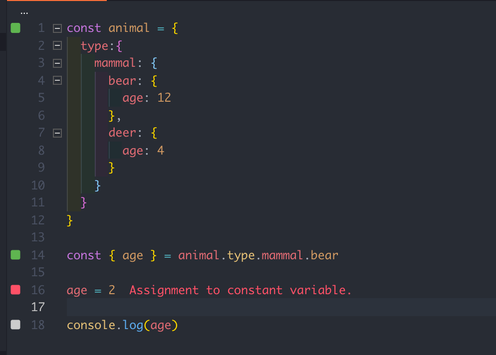
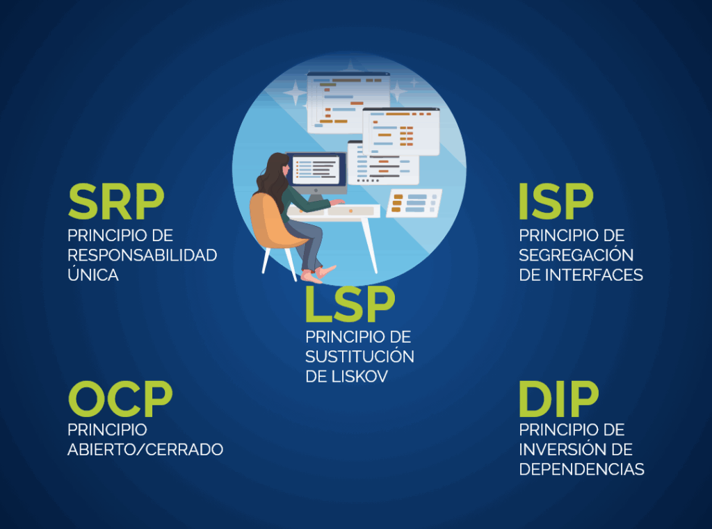

Artículos sobre programación, buenas prácticas y tecnología moderna
JavaScript Moderno: ES6+ que debes dominar en 2025
· Autor: Ana Gómez
·
JavaScriptES6+Frontend

Las características modernas de JavaScript hacen el código más
limpio y expresivo.
¿Por qué importa mantenerse actualizado?
JavaScript es el lenguaje de programación más utilizado del mundo,
presente tanto en el navegador como en el servidor gracias a
Node.js. Desde la especificación ES6 (ECMAScript 2015), el
lenguaje recibe nuevas características cada año que simplifican el
desarrollo y mejoran el rendimiento de las aplicaciones.
Ignorar las nuevas funcionalidades no solo hace tu código más
difícil de leer, sino que también te pone en desventaja frente a
otros desarrolladores. Dominar ES6+ es hoy un requisito básico en
cualquier proceso de selección de desarrolladores frontend o
fullstack.
Características esenciales de ES6+
A continuación repasamos las funcionalidades más importantes que
debes incorporar en tu flujo de trabajo diario. Cada una resuelve
un problema concreto y reduce la cantidad de código que tienes que
escribir.
Arrow functions — Sintaxis concisa y binding
léxico de this.
Destructuring — Extrae valores de arrays y
objetos en una sola línea.
Template literals — Interpolación de variables
con backticks (`).
Módulos ES (import/export) — Organización del
código sin CommonJS.
Async/Await — Manejo de promesas con sintaxis
síncrona y más legible.
Optional chaining (?.) — Acceso
seguro a propiedades anidadas.
Ejemplo práctico: consumir una API REST
El siguiente fragmento muestra cómo usar async/await,
fetch y destructuring para obtener datos de una API
pública de forma clara y sin anidar llamadas:
// Obtener información de un usuario desde una API REST
async function obtenerUsuario(id) {
try {
const respuesta = await fetch(`https://jsonplaceholder.typicode.com/users/${id}`);
if (!respuesta.ok) {
throw new Error(`Error HTTP: ${respuesta.status}`);
}
const { name, email, address: { city } } = await respuesta.json();
console.log(`Nombre: ${name} | Email: ${email} | Ciudad: ${city}`);
} catch (error) {
console.error('Ocurrió un error:', error.message);
}
}
obtenerUsuario(1);
Nota cómo el destructuring con renombrado (address: { city }) extrae directamente la ciudad del objeto anidado en una sola
operación. Este patrón reduce significativamente el ruido
sintáctico en comparación con el enfoque callbacks.
Git Avanzado: flujos de trabajo y buenas prácticas
· Autor: Carlos Méndez
·
GitDevOpsColaboración
Un flujo de ramas bien definido evita conflictos y facilita la
integración continua.
Git va más allá de commit y push
La mayor parte de los desarrolladores aprende Git de forma
autodidacta y termina usando solo un puñado de comandos básicos:
add, commit y push. Si bien
esto es suficiente para proyectos personales, en entornos de
equipo el desconocimiento de comandos avanzados genera conflictos
difíciles de resolver, historiales caóticos y pérdidas de tiempo
importantes.
Este artículo cubre los flujos de trabajo más adoptados en la
industria y los comandos que todo desarrollador profesional
debería manejar con confianza.
Gitflow vs. Trunk-Based Development
Existen dos grandes filosofías para gestionar ramas en un
repositorio de equipo.
Gitflow propone ramas de larga duración
(main, develop, release,
hotfix) y es popular en proyectos con ciclos de
lanzamiento definidos. Por otro lado,
Trunk-Based Development apuesta por integrar
cambios frecuentes directamente en la rama principal, apoyándose
en feature flags para ocultar funcionalidades incompletas al
usuario final.
No existe una solución universal: la elección depende del tamaño
del equipo, la frecuencia de despliegues y el nivel de
automatización disponible. Lo importante es que el equipo acuerde
y documente las convenciones.
Conventional Commits: mensajes que aportan valor
Un historial de commits bien escrito es la documentación más
actualizada de un proyecto. El estándar
Conventional Commits define una estructura simple para
los mensajes: tipo(ámbito): descripción breve. Los
tipos más comunes son:
feat — nueva funcionalidad para el usuario.
fix — corrección de un error.
docs — cambios en documentación.
style — formato, sin cambios en lógica.
refactor — reestructuración de código sin
cambiar comportamiento.
test — adición o corrección de pruebas
automatizadas.
chore — tareas de mantenimiento del proyecto.
Herramientas como commitlint y
Husky permiten validar automáticamente que cada
commit siga estas convenciones antes de ser aceptado en el
repositorio.
Comandos avanzados que debes conocer
Estos comandos están disponibles directamente en
la documentación oficial de Git
y son fundamentales para el trabajo en equipo:
# Rebase interactivo: reorganizar, combinar o editar commits recientes
git rebase -i HEAD~5
# Cherry-pick: integrar un commit específico de otra rama
git cherry-pick <hash-del-commit>
# Stash: guardar cambios sin realizar un commit
git stash push -m "trabajo en progreso: nueva validación"
# Bisect: encontrar el commit que introdujo un bug
git bisect start
git bisect bad HEAD
git bisect good v2.0.0
Principios SOLID: escribe código que resista el tiempo
· Autor: Laura Torres
·
SOLIDArquitecturaPython

Los principios SOLID son la base de cualquier diseño de software
mantenible y escalable.
¿Qué son los principios SOLID?
SOLID es un acrónimo acuñado por Robert C. Martin ("Uncle Bob")
que agrupa cinco principios de diseño orientado a objetos cuya
aplicación produce código más legible, mantenible y extensible.
Aunque fueron formulados en el contexto de lenguajes como Java y
C++, son igualmente aplicables en Python, TypeScript y cualquier
lenguaje que soporte programación orientada a objetos.
Es importante entender que SOLID no es un conjunto de reglas
rígidas, sino guidelines que ayudan a tomar mejores decisiones de
diseño. Aplicarlos de forma dogmática puede llevar a
sobre-ingeniería; la clave está en encontrar el balance correcto
según el tamaño y la longevidad del proyecto.
Los cinco principios
Cada letra del acrónimo corresponde a un principio independiente.
A continuación se describe cada uno con un ejemplo concreto en
Python:
S — Single Responsibility Principle (SRP): Una
clase debe tener una sola razón para cambiar. Si una clase
gestiona usuarios y también envía correos electrónicos, tiene
dos responsabilidades que deben separarse.
O — Open/Closed Principle (OCP): Las entidades
de software deben estar abiertas para su extensión, pero
cerradas para su modificación. Usa herencia o composición para
añadir comportamiento sin tocar el código existente.
L — Liskov Substitution Principle (LSP): Los
objetos de una subclase deben poder sustituir a los de su
superclase sin alterar el comportamiento esperado del programa.
I — Interface Segregation Principle (ISP):
Ninguna clase debe verse obligada a implementar interfaces que
no utiliza. Prefiere interfaces pequeñas y específicas sobre
interfaces grandes y genéricas.
D — Dependency Inversion Principle (DIP): Los
módulos de alto nivel no deben depender de módulos de bajo
nivel; ambos deben depender de abstracciones. Las abstracciones
no deben depender de los detalles; los detalles deben depender
de las abstracciones.
Ejemplo: SRP en Python
El siguiente ejemplo muestra cómo refactorizar una clase que viola
el SRP:
# ❌ Violación del SRP: la clase hace demasiado
class UsuarioManager:
def guardar_en_base_de_datos(self, usuario): ...
def enviar_email_bienvenida(self, usuario): ...
def generar_reporte_pdf(self, usuario): ...
# ✅ Aplicando SRP: cada clase tiene una sola responsabilidad
class UsuarioRepositorio:
def guardar(self, usuario): ...
class ServicioEmail:
def enviar_bienvenida(self, usuario): ...
class GeneradorReporte:
def generar_pdf(self, usuario): ...
Para conocer más sobre principios de diseño, consulta el libro
Clean Code
de Robert C. Martin, o el artículo de
DigitalOcean sobre SOLID.